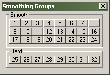

Dialogs: Smoothing Groups
The Smoothing Groups dialog allows you to match sets of faces that will be lit as one smooth surface when compiled.

About Smoothing Groups
The Source Engine can add smoother lighting to faces so the surfaces appear as one continous surface. Smoothing Groups are sets of these faces that are defined to render smooth with one another.
To be smoothed correctly, faces must meet these restrictions:
- Must share a common edge.
- Lightmaps of the faces must be aligned to one another.
- The lightmap scale must be small enough that at least one lightmap luxel is small enough to fit on each face.
- Must be in the same Smoothing Group.
Smooth
These are the Smooth Groups that the current face(s) are a member of. To add a face to a Smoothing Group, select the face, then depress the numbered button of a Smoothing Group. A face can be in multiple Smoothing Groups.
Hard
Use these to pick a group of faces that will never be smoothed. Hard Groups are selected just like Smoothing Groups. For example, this can be used to make sure the ends of a cylinderical brush does not get smoothed with the side faces.
Related Topics
© 2004 Valve Corporation. All rights reserved. Valve, the Valve logo, Half-Life, the Half-Life logo, the Lambda logo, Steam, the Steam logo, Team Fortress, the Team Fortress logo, Opposing Force, Day of Defeat, the Day of Defeat logo, Counter-Strike, the Counter-Strike logo, Source, the Source logo, Hammer and Counter-Strike: Condition Zero are trademarks and/or registered trademarks of Valve Corporation. Microsoft and Visual Studio are trademarks and/or registered trademarks of Microsoft Corporation. All other trademarks are property of their respective owners.